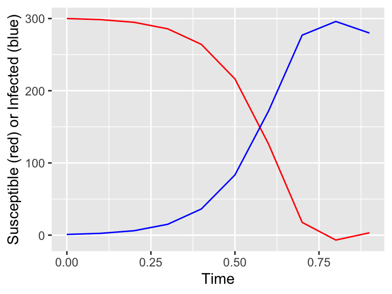

2.1 The general case
Consider the following two dimensional linear system, where \(a\), \(b\), \(c\), and \(d\) can be any number:
\[\begin{equation} \begin{pmatrix} \frac{dx}{dt} \\ \frac{dy}{dt} \end{pmatrix} = \begin{pmatrix} ax+by \\ cx+dy \end{pmatrix} = \begin{pmatrix} a & b \\ c & d \end{pmatrix} \begin{pmatrix} x \\ y \end{pmatrix} \end{equation}\]
Eigenvalues are found by solving \(\displaystyle \det (A - \lambda I ) =0\), as a reminder we need to compute the following:
\[\begin{equation} \det \begin{pmatrix} a - \lambda & b \\ c & d-\lambda \end{pmatrix} = (a-\lambda)(d-\lambda) - bc \end{equation}\]
If we factor out this expression we obtain the characteristic equation:
\[\begin{equation} \lambda^{2} - (a+d) \lambda + ad - bc = 0 \end{equation}\]
What is cool about this equation is that the roots can be expressed as functions of the entries of the matrix \(A\). In fact, in linear algebra the term \(a+d\) is the sum of the diagonal entries, which is known as the trace of a matrix, or \(\mbox{tr}(A)\). And you may recognize that \(ad-bc\) is the same as \(\det(A)\). So our characteristic equation is \(\lambda^{2} - \mbox{tr}(A)\lambda + \det(A)\).
This might be a computationally easier way to compute the eigenvalues, especially if you have a known parameter. We can also exploit this relationship even more, which may require some circularity in the argument.
Let’s say we have two eigenvalues \(\lambda_{1}\) and \(\lambda_{2}\). We make no assumptions on if they are real or imaginary or equal. But if they are eigenvalues, then they are roots of the characteristic polynomial. This means that \((\lambda-\lambda_{1})(\lambda-\lambda_{2})=0\). If we factor out this equation we have \(\lambda^{2}-(\lambda_{1}+\lambda_{2}) \lambda + \lambda_{1} \lambda_{2}=0\). Hmmm. If we compare our two equations we have:
\[\begin{equation} \lambda^{2}-(\lambda_{1}+\lambda_{2}) \lambda + \lambda_{1} \lambda_{2} = \lambda^{2} - \mbox{tr}(A)\lambda + \det(A) \end{equation}\]
This uncovers some neat relationships - in particular tr\((A)=(\lambda_{1}+\lambda_{2})\) and \(\det(A)=\lambda_{1}+\lambda_{2}\). Why should we bother with this? Well this provides an alternative pathway to understand stability through the trace and determinant, in particular we have the following correspondence between the signs of the eigenvalues and the trace and determinant:
| Sign of \(\lambda_{1}\) | Sign of \(\lambda_{2}\) | Tendency of solution | Sign of tr\((A)\) | Sign of \(\det(A)\) |
|---|---|---|---|---|
| Positive | Positive | Source | Positive | Positive |
| Negative | Negative | Sink | Negative | Positive |
| Positive | Negative | Saddle | ? | Negative |
| Negative | Positive | Saddle | ? | Negative |
For the moment we will only consider real non-zero values of the eigenvalues - more specialized cases will occur later. But carefully at the table:
- If the determinant is negative, then the equilibrium solution is a saddle.
- If the determinant is positive and the trace is negative, then the equilibrium solution is a sink
- If the determinant and trace are both positive, then the equilibrium solution is a source.
This is a pretty quick and easy way to investigate stability! Another way to graphically represent the stability of solutions is with the trace-determinant plane, with the tr\((A)\) on the horizontal axis and det\((A)\) on the vertical axis:

It also turns out that we can extend this diagram to the imaginary and nonzero cases for the roots of the characteristic equation. Using the quadratic formula we can solve directly for the eigenvalues as a function of the trace and determinant:
\[\begin{equation}\label{eq:roots} \lambda_{1,2}= \frac{\mbox{tr}(A)}{2} \pm \frac{\sqrt{ (\mbox{tr}(A))^2-4 \det(A)}}{2} \end{equation}\]
This seems like a more complicated expression, but it can be shown to be consistent with our above work. Moving to our quadratic equation allows us to see what happens when we have imaginary eigenvalues - which can be a stable or unstable spiral depending on its location in the trace-determinant plane.

If the discriminant (the part inside the square root, which is \((\mbox{tr}(A))^2-4 \det(A)\)) of the eigenvalue expression is negative then we have a spiral source or spiral sink depending on the positivity of the tr\((A)\). Finally the center equilibrium occurs when the trace is exactly zero and the determinant is positive. This graphic of the trace-determinant plane is a quick way to analyze stability of a solution without a lot of algebraic analysis.